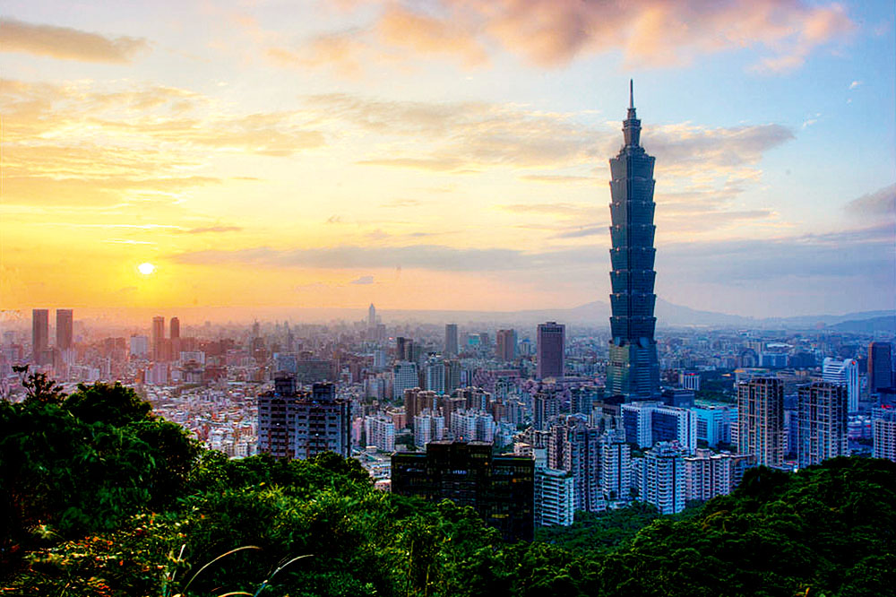

遊Guide
Home
日本
韓國
台灣
新加坡
Home
日本
韓國
台灣
新加坡
台灣魅力無窮：探索美食、文化與自然的完美天堂！
台灣，係你必去嘅亞洲熱點！ 台北嘅夜市小食，阿里山嘅雲海日出，仲有珍珠奶茶真係唔飲唔得！台灣人又熱情又好客，保證令你有賓至如歸嘅感覺。快啲計劃你嘅台灣之行，親身感受呢個寶島嘅獨特魅力！
台灣旅遊概況
台灣在全球旅遊榜單中表現優異，名列全亞洲最民主的國家。
在受尊重程度上僅次於日本，位居全球第二。
儘管觀光人次仍需提升，台灣的高評價和深厚的人文素養，使其成為全球最受喜愛的亞洲國家之一。
經濟與產業
台灣是高度發展的自由經濟體，科技核心重鎮，吸引眾多外商投資。
在半導體、電子產品和資訊技術等領域具有領先地位，國際知名企業如台積電、華碩和宏碁均在此設立總部。
社會環境
台灣以良好的治安和熱情友好的人民著稱，吸引外國投資者。
無論是在繁華的城市中探索時尚購物，還是品嚐地道的台灣小吃，如牛肉麵和珍珠奶茶，都能感受到這個島嶼的獨特魅力。
自然景觀
台灣交通網絡發達，各大城市之間連接便捷，遊客可輕鬆探索美麗的自然景觀，如壯麗的阿里山和迷人的日月潭。
豐富的文化資源和各種傳統節慶及藝術活動使得這裡充滿活力。

最佳旅遊時間
春季（3月至5月）：賞櫻最佳時期，特別是在陽明山、淡水和阿里山等地。氣候宜人，適合戶外活動。
秋季（10月至11月）：天氣穩定、陽光明媚，涼爽舒適，非常適合各種戶外活動。可參加台灣燈會和中秋節等文化活動，感受當地人文魅力。
冬季（12月至2月）：雖然氣溫較低，但平均氣溫約在15度左右，是賞楓和浸泡溫泉的好時機。
交通部觀光署